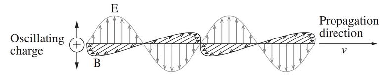

Capítol 6 La llum i l’àtom
(darrera actualització: 13 de maig de 2026)
Índex
6.1 Introducció
Aquest capítol tracta conceptes fonamentals com la mecànica quàntica, l’espectroscòpia i l’estructura atòmica, que són essencials per comprendre la interacció entre la llum i la matèria. El capítol es basa fortament en [3] però conté informació d’altres fonts.
Quan mirem un cotxe al sol, no veiem només una superfície pintada: veiem el resultat de moltes interaccions entre fotons, electrons, enllaços químics i materials. Un pigment absorbeix unes longituds d’ona i en reflecteix unes altres; un recobriment es pot degradar si la llum ultraviolada excita electrons o trenca enllaços; un LED emet llum perquè els electrons d’un semiconductor perden energia en recombinar-se. En tots aquests casos, la pregunta de fons és la mateixa: quines energies pot absorbir, emetre o transformar la matèria?
Per respondre-la cal baixar d’escala. Primer hem d’entendre que la llum no intercanvia energia de manera contínua, sinó en paquets: els fotons. Després veurem que els electrons dels àtoms i de les molècules tampoc no poden tenir qualsevol energia. Aquesta quantització, que apareix de manera molt clara en l’àtom d’hidrogen, és la porta d’entrada a la idea d’orbital. Quan passem a àtoms amb molts electrons, entren en joc l’apantallament, la penetració i la configuració electrònica; i quan els àtoms s’uneixen, els orbitals deixen de ser només atòmics i es converteixen en orbitals moleculars.
Aquest recorregut no és només formal. Ens ha de permetre llegir un espectre com una empremta energètica de la substància: una banda pot revelar una transició electrònica, una vibració d’un enllaç, una rotació molecular o una bretxa de banda en un sòlid. Per això el capítol connecta naturalment amb l’enllaç químic i les forces intermoleculars del Capítol ??, amb les energies d’enllaç de la combustió i amb les propietats dels polímers, pigments i semiconductors que apareixen en els materials d’automoció.
La llum és una forma d’energia radiant, és a dir, energia que es pot transmetre pel buit. Tradicionalment, la llum es considera una combinació d’oscil·lacions perpendiculars dels camps elèctric i magnètic: l’anomenada teoria ondulatòria de Maxwell. Aquesta teoria explica molt bé fenòmens com la reflexió, refracció, difracció i interferència de la llum.
Unificació dels Camps Elèctric i Magnètic
La Llei de la Inducció de Faraday, segons la qual un objecte que experimenta un canvi en el flux magnètic rep una força electromotriu (fem) induïda. Faraday va proposar que els camps magnètics variables generen camps elèctrics.
Quan l’objecte és un conductor tancat, la f.e.m. indueix un corrent. La inducció del corrent recorda el comportament d’un camp elèctric, ja que els electrons són dirigits en una direcció determinada, paral·lela a l’orientació del camp elèctric.
Maxwell va ampliar la proposta de Faraday tot demostrant matemàticament que els camps elèctrics variables també generen camps magnètics. Això implicava que aquests dos fenòmens, fins aleshores considerats separats, havien de ser percebuts com una sola entitat: el camp electromagnètic.
Així doncs:
-
• Els camps elèctrics oscil·lants generen camps magnètics.
-
• Els camps magnètics oscil·lants generen camps elèctrics.
Per tant, una càrrega elèctrica en moviment genera un camp magnètic com a conseqüència del seu camp elèctric inherent.
Maxwell va utilitzar les seves quatre equacions per derivar dues noves equacions que descriuen els camps elèctrics i magnètics oscil·lants. Aquestes equacions tenien la forma característica d’una ona, i implicaven que:
-
• Els camps elèctric i magnètic estan en fase.
-
• Són perpendiculars entre si.
-
• Oscil·len en direccions perpendiculars a la direcció de propagació de l’ona.

Camp elèctric (E) i magnètic (B) en una ona electromagnètica
La teoria de l’electromagnetisme de Maxwell també establia la relació entre les ones electromagnètiques i les càrregues elèctriques. Va demostrar que una càrrega oscil·lant produeix un camp elèctric variable, que al seu torn genera un camp magnètic variable. Aquests dos camps es retroalimenten i continuen generant-se mútuament.
Quan aquesta càrrega oscil·lant es propaga en l’espai, el resultat és una ona electromagnètica autoproductora (self-propagating), capaç de desplaçar-se pel buit a una velocitat , la velocitat de la llum.
on:
-
• és la permeabilitat magnètica del buit,
-
• és la permittivitat elèctrica del buit.
Aquesta predicció va ser una de les grans fites de la física del segle XIX, ja que va demostrar que la llum és una ona electromagnètica.
Tanmateix, a principis del segle XX, aquesta teoria no podia explicar:
-
• Els espectres de línies dels elements,
-
• La radiació del cos negre,
-
• L’efecte fotoelèctric.
Per resoldre-ho, Max Planck, Albert Einstein i Niels Bohr van introduir el concepte de fotó, un paquet discret d’energia. L’energia d’un fotó és proporcional a la seva freqüència  segons l’equació:
segons l’equació:
on  és la constant de Planck.
és la constant de Planck.
Atès que la freqüència i la longitud d’ona estan relacionades per , on és la velocitat de la llum en el buit, podem reescriure l’energia com:
Això implica que com més petita és la longitud d’ona, més gran és l’energia del fotó.
En espectroscòpia també és molt habitual expressar la posició d’una línia amb el nombre d’ona, simbolitzat sovint com :
El nombre d’ona és, per tant, una freqüència espacial: indica quantes longituds d’ona caben en una unitat de distància. Les unitats habituals són o, molt sovint en espectroscòpia, . No s’ha de confondre amb la freqüència , que té unitats de , ni amb el nombre d’ona angular o circular , que apareix sovint en mecànica ondulatòria.
La llum es classifica segons l’energia dels seus fotons dins l’espectre electromagnètic. Aquest espectre abasta més de 21 ordres de magnitud en unitats d’energia (electronvolts, eV).
La Figura 6.1 situa la llum visible dins el conjunt de l’espectre electromagnètic.
Què és un espectre?
Un espectre és una representació de com la intensitat d’una radiació depèn de la seva energia, freqüència, nombre d’ona o longitud d’ona. En un espectre d’absorció es representa quina part de la llum incident ha estat absorbida per la mostra; en un espectre d’emissió es representa la llum que la mostra emet després d’haver estat excitada. Les posicions de les bandes indiquen diferències d’energia entre estats, i les intensitats informen sobre la probabilitat de cada transició i sobre la quantitat de matèria que hi participa.
En automoció, aquesta idea apareix pertot: en el color d’una pintura, en la degradació UV d’un polímer, en l’emissió d’un LED, en la detecció de gasos d’escapament per infraroig i en el control de qualitat de combustibles, lubricants i recobriments. Un espectre no és només una figura bonica: és una manera de connectar estructura molecular, enllaç químic i propietats macroscòpiques.
Les formes més comunes d’energia radiant que arriben a la superfície terrestre són:
-
• La llum visible, amb longituds d’ona entre 400 nm (violeta) i 750 nm (vermell).
-
• Algunes formes de llum ultraviolada (UV), amb longituds d’ona entre 100 nm i 400 nm.
Quan la llum arriba a la matèria, pot ser:
-
• Refractada,
-
• Reflectida,
-
• Absorbida.
6.2 L’estructura electrònica dels àtoms
Des del punt de vista químic, ens interessa sobretot l’absorció. Aquesta es produeix principalment per excitació electrònica. Els electrons poden ser promocionats d’un orbital de menor energia a un d’energia superior si absorbeixen un fotó amb energia suficient.
Aquest procés es pot estudiar mitjançant l’espectroscòpia d’absorció. Cada àtom o molècula té una configuració única d’energia orbital, cosa que permet identificar substàncies pel patró d’energia absorbida.
En una molècula, el patró és més ric que en un àtom. L’energia total no depèn només de la posició dels electrons: també depèn de com vibren els enllaços i de com gira la molècula. Per això, els espectres moleculars sovint tenen bandes amples i estructurades, no només línies fines. En el visible i l’ultraviolat acostumen a dominar les transicions electròniques; a l’infraroig, les vibracions dels enllaços; en microones, les rotacions. Aquesta separació no és absoluta, però és una guia útil per interpretar dades reals.
Els electrons excitats no romanen en aquest estat indefinidament. Hi ha tres possibles vies de relaxació:
-
1. Relaxació tèrmica: L’energia es transfereix a altres molècules com a energia cinètica, augmentant la temperatura del sistema.
-
2. Relaxació radiativa: L’electró retorna a l’estat fonamental emetent un nou fotó. Aquest fenomen és la base de l’espectroscòpia d’emissió.
-
3. Reacció fotoquímica: L’excitació provoca una reacció química, com una dissociació molecular o una reordenació atòmica.
Aquests processos són fonamentals tant per entendre com la llum pot degradar materials del teu cotxe (com plàstics, ceres o pintura) com per aplicar tècniques analítiques en química moderna.
Aquest punt fa de pont entre l’energia molecular, les forces d’enllaç i les propietats òptiques dels materials. La mateixa conversió entre energia, freqüència, longitud d’ona i nombre d’ona que fem servir per descriure una transició atòmica també serveix per interpretar absorcions moleculars, emissió de LEDs o degradació fotoquímica d’un recobriment.
6.2.1 Espectre de línies atòmiques
Les línies d’absorció i emissió es produeixen quan els electrons de l’àtom absorbeixen o emeten fotons. Els espectres atòmics són característics de cada element i es poden utilitzar per identificar substàncies desconegudes. Els espectres atòmics es poden classificar en tres tipus:
-
• Espectre continu: Els sòlids, els fluids i els gasos d’alta pressió emeten un espectre continu. En aquest espectre, les longituds d’ona estan contínuament distribuïdes.
-
• Espectre de línies: Els gasos calents de baixa densitat emeten un espectre de línies. En aquest espectre, les longituds d’ona són discretes i corresponen a transicions electròniques específiques.
-
• Espectre d’absorció: Quan la llum amb un espectre continu passa a través d’un gas fred de baixa densitat, els colors específics de la llum són absorbits, deixant línies fosques en un espectre d’absorció.
La Figura 6.2 compara aquests tres tipus d’espectres i la situació física que els origina.
Els exercicis 8 i 10 tornen sobre aquesta mateixa idea amb l’hidrogen: una línia espectral no és un color arbitrari, sinó la diferència d’energia entre dos estats electrònics expressada com a longitud d’ona o com a nombre d’ona.
6.2.2 Radiació d’un cos negre
Un cos negre és un cos ideal que absorbeix tota la radiació que incideix sobre ell. La radiació d’un cos negre és la radiació electromagnètica emesa per un cos negre a una temperatura determinada. Aquesta radiació depèn de la temperatura i de la longitud d’ona, i es pot descriure mitjançant la llei de Planck.
La Figura 6.3 mostra la distribució espectral d’un cos negre a diferents temperatures.
-
• Rayleigh (Juny 1900): Radiació contínua
 :
:
-
• Planck (Octubre-Desembre 1900): Radiació en paquets (quantum):
6.2.3 Efecte fotoelèctric i experiment de Rutherford
L’efecte fotoelèctric és l’emissió d’electrons d’un material provocada per radiació electromagnètica com la llum ultraviolada. Aquests electrons s’anomenen fotoelectrons. Els resultats experimentals contradiuen l’electromagnetisme clàssic, el qual prediu que la llum contínua transfereix energia de forma gradual als electrons fins que són alliberats. Segons aquesta teoria, la intensitat de la llum hauria d’afectar l’energia cinètica dels electrons emesos. Tanmateix, els experiments demostren que només s’emeten electrons si la llum supera una certa freqüència, independentment de la seva intensitat o durada.
Aquesta observació va portar Albert Einstein a proposar que la llum no es comporta només com una ona contínua, sinó com paquets discrets d’energia, més tard anomenats fotons per Gilbert N. Lewis en una carta publicada el 18 de desembre de 1926 a la revista Nature.
La Figura 6.4 resumeix l’experiment de l’efecte fotoelèctric.
-
• Lenard (Nobel 1905, raigs catòdics):
-
– La freqüència llindar d’emissió depèn de cada metall.
-
– Més llum implica més electrons, però amb la mateixa energia cinètica.
-
– Més freqüència de radiació implica més energia cinètica dels electrons.
-
-
• Einstein (1905):
Aquí,
 és l’energia mínima necessària per extreure un electró de la superfície del material. Es coneix com la funció de treball de la superfície.
és l’energia mínima necessària per extreure un electró de la superfície del material. Es coneix com la funció de treball de la superfície.
L’exercici 13 fa servir aquesta equació en el sentit experimental: a partir de dades d’efecte fotoelèctric es pot recuperar la constant de Planck i veure que la freqüència, no només la intensitat de la llum, controla l’energia dels electrons emesos. Però per explicar-ho implicava introduir el concepte de dualitat ona-corpuscle.
La Figura 6.5 recorda l’esquema d’un tub de raigs catòdics, que va ser clau per identificar l’electró.
Des dels experiments de Thomson amb raigs catòdics (1897) i Milikan (1909) es sabia que els àtoms estaven formats per càrregues positives i negatives, però es pensava que tenien forma esfèrica amb els electrons al seu interior.
La Figura 6.6 mostra l’esquema de l’experiment de Rutherford.
La Figura 6.7 compara la predicció del model de Thomson amb el resultat interpretat per Rutherford.
Rutherford (1911) va mostrar que l’àtom no podia ser una esfera uniforme com la predita. Va mostrar que fent impactar partícules  (nuclis d’àtoms d’heli; per tant, amb càrrega +2 i massa 4) sobre una placa fina de metall es produïa ampla difracció d’un nombre petit de partícules i n’hi havia moltíssimes que travessaven la placa sense cap desviació o ben poca. Això implicava que els àtoms havien d’estar formats per una massa
central altament carregada positivament i havien de tenir un volum molt més gran per tal que les partícules majoritàriament travessessin la placa. 1 .
(nuclis d’àtoms d’heli; per tant, amb càrrega +2 i massa 4) sobre una placa fina de metall es produïa ampla difracció d’un nombre petit de partícules i n’hi havia moltíssimes que travessaven la placa sense cap desviació o ben poca. Això implicava que els àtoms havien d’estar formats per una massa
central altament carregada positivament i havien de tenir un volum molt més gran per tal que les partícules majoritàriament travessessin la placa. 1 .
6.2.4 Àtom de Bohr
La Figura 6.8 representa el model atòmic de Bohr amb electrons en òrbites quantitzades.
-
• Balmer, Rydberg (1885-1910); línies espectrals de l’àtom d’hidrogen expressades com a nombre d’ona:
on és el nombre d’ona de la radiació emesa o absorbida i és la constant de Rydberg de l’hidrogen.
-
• Bohr (1913):
-
1. estats estacionaris de l’àtom d’H
-
2. un estat estacionari no emet energia electromagnètica
-
3. l’emissió entre estats és igual a un fotó: .
A partir de l’Eq. 6.1 i aquest resultat, es pot veure que l’energia dels estats estacionaris del H ve donada per amb . I va afegir dos postulats més al seu model:
-
1. l’electró de l’estat estacionari es mou en un cercle de radi determinat
-
2. hi ha una relació entre el radi d’aquestes òrbites i la seva energia:
A partir d’aquí, va deduir una energia per a cada nivell d’energia:
per a les energies orbitals d’àtoms tipus hidrogen. Aquí, és l’energia de l’estat fonamental () per a l’hidrogen () i ve donada per:
Així, per a l’hidrogen:
El resultat concorda amb l’experiment i dona els nivells correctes de les energies de l’àtom de Bohr (Figura 6.9), però els dos darrers postulats són totalment falsos i va ser el 1926 quan Schrödinger va formular la seva equació de la mecànica quàntica que superava el model de Bohr.
-
![\[ E_0 = \frac {2 \pi ^2 Q_e^4 m_e k^2}{\mathrm {h}^2} = 13.6 \, \text {eV}. \]](web_GEALlum-images/image-42.svg)
6.2.5 Hipòtesi de de Broglie i principi d’incertesa
El 1923, de Broglie va formular la hipòtesi que la matèria, com la llum, també tenia naturalesa dual ona-corpuscle. Això explicaria el rerafons del model de Bohr: els electrons mostraven nivells d’energia quantitzats. En el cas de la llum, Einstein havia arribat a la relació entre la longitud d’ona i la massa d’un
fotó, . De Broglie va aplicar el mateix raonament a una partícula de massa  i velocitat :
i velocitat :
Aquesta relació és fàcil de menystenir perquè les longituds d’ona de partícules macroscòpiques són ínfimes. En canvi, per electrons, partícules alfa o altres partícules subatòmiques pot tenir conseqüències mesurables. L’exercici 17 permet comparar aquestes escales.
A partir de considerar aquesta hipòtesi i la natura dual de les partícules, es pot arribar a veure que el producte de les incerteses en el càlcul de la posició i el moment lineal estan relacionades per , o principi d’incertesa de Heisenberg (1927).
6.2.6 Mecànica quàntica
Descrita per Heisenberg, Born i Jordan (1925) i per Schrödinger (1926).
La mecànica clàssica és determinista, mentre que la quàntica és probabilística (pel principi d’incertesa de Heisenberg). L’estat d’un sistema es determina per la seva funció d’estat , que és una funció de les coordenades de les partícules i del temps:
on , , són les masses de les  partícules de coordenades i
partícules de coordenades i  és l’energia potencial del sistema.
és l’energia potencial del sistema.
El que ens interessa ara mateix és saber que la funció d’estat ens informa sobre l’estat del sistema. A partir d’ella ho podem saber tot del sistema. El problema és trobar-la...
Per fer un cas senzill pensem en un sistema en el què l’energia potencial sigui independent del temps, com succeeix en un àtom o una molècula aïllats. En aquest cas, l’equació es redueix a (per a una sola partícula)
on és la funció d’ona del sistema.
La Figura 6.10 defineix el model ideal d’una partícula confinada en una caixa unidimensional.
Partícula en una caixa
Un dels sistemes més simples per als quals l’Eq. 6.2.6 es pot solucionar és el cas d’una partícula en una caixa unidimensional de parets infranquejables i impenetrables. Considerem una partícula de massa que es mou amb una energia positiva al llarg de l’eix entre i (Figura 6.10). A partir de l’Eq. 6.2.6 obtenim, per a aquest sistema:
Ens adonem que per a la regió , on , podem escriure:
Com sabem, la segona derivada d’una funció ens dona informació qualitativa sobre la seva corbatura. En aquest cas veiem que quan la sigui negativa la seva corbatura serà positiva, i a l’inrevés. La funció és un exemple d’aquest tipus de funció. De fet, és una solució de l’Eq. 6.2.6. Si la substituïm a l’equació:

Per tant, . Fixem-nos que l’energia fins ara no està quantitzada, ja que no hem ”tancatl·la partícula restringint-la, encara, a cap valor, sinó que és un valor qualsevol positiu. Si ara tenim en compte que aquesta partícula no és lliure de moure’s sinó que està tancada entre les parets i la situació canvia. Així, en tant que el quadrat de la funció d’ona es fa zero quan la probabilitat de trobar una partícula en un punt determinat és zero, i tenint en compte que la funció ha de ser contínua en tots els punts, és fàcil adonar-se que i , que corresponen a les condicions límits del problema amb què ens enfrontem. La primera condició s’acompleix de forma automàtica si substituïm a l’Eq. 6.6. La segona condició, però, només s’acompleix si , amb . Els valors d’ que compleixen aquesta condició són
que representen els valors permesos (quantitzats) d’energia, corresponents a funcions d’ona del tipus:
Finalment, podem trobar  tenint en compte que la probabilitat total de trobar la partícula en tot l’espai accessible és igual a 1. Fent trobem que . Per tant, finalment, els resultats de l’energia i la funció d’ona d’una partícula en una caixa són:
tenint en compte que la probabilitat total de trobar la partícula en tot l’espai accessible és igual a 1. Fent trobem que . Per tant, finalment, els resultats de l’energia i la funció d’ona d’una partícula en una caixa són:
La Figura 6.11 mostra la forma de la funció d’ona per als primers nivells de quantització de l’energia.[6] Abans de continuar, és recomanable executar el notebook interactiu de LibreTexts Particle in an Infinite Potential Box (Python Notebook) sobre la partícula en una caixa infinita: canviar la mida de la caixa, la massa de la partícula i el nombre quàntic ajuda a veure per què apareixen nivells discrets i com canvien els nodes de la funció d’ona.
De l’exemple de la partícula en una caixa podem extreure’n conceptes generals que ens serviran més endavant:
-
• Els nivells d’energia quantitzats només apareixen si confinem la partícula entre dos extrems de potencial infinit. Sempre que tinguem moviments confinats o periòdics, apareixerà quantització, com en la rotació d’una molècula.
-
• A mesura que augmenta la massa de la partícula o disminueix l’espai en el què aquesta està confinada, la distància entre les energies de quantització es fa menor.
-
• El fet que la funció d’ona passi de valors positius a negatius implica que hi ha punts en els quals el seu valor és zero (i que anomenem nodes). En aquests punts, el seu quadrat també serà zero, i per tant la probabilitat de trobar-hi la partícula serà nul·la.
6.3 L’àtom d’hidrogen
6.3.1 Nombres quàntics
Estudiar l’àtom d’hidrogen, l’exemple més simple possible, ens permetrà comprendre la base de l’enllaç químic entre àtoms. L’aplicació de l’equació de Schrödinger
a aquest àtom dona resultats que estan d’acord amb les dades experimentals que se’n tenen. L’equació de Schrödinger té la virtut de no necessitar postular els nombres que descriuen la quantització de l’energia, com succeïa en el model de Bohr. A partir d’aquesta equació, els nombres de la quantització de l’energia sorgeixen de forma natural en solucionar-la. En el cas de l’àtom d’hidrogen, els nombres quàntics que sorgeixen són:
-
• Nombre quàntic principal,
 : Determina les energies accessibles per l’àtom d’hidrogen o per qualsevol altre àtom d’un sol electró i càrrega nuclear :
: Determina les energies accessibles per l’àtom d’hidrogen o per qualsevol altre àtom d’un sol electró i càrrega nuclear :
Aquest resultat s’obté de la resolució de l’Eq. 6.8 i és el mateix que va trobar Bohr en el seu model. Cal fixar-se que l’energia en un àtom d’hidrogen o en qualsevol àtom en el qual només hi hagi un electró només depèn del nombre quàntic principal
.
-
• Nombre quàntic del moment angular,
 : En estar relacionat amb el moment angular de l’electró, també ho està amb la seva energia cinètica i, per tant, és lògic que estigui limitat pel valor de (que expressa els nivells permesos d’energia total). .
: En estar relacionat amb el moment angular de l’electró, també ho està amb la seva energia cinètica i, per tant, és lògic que estigui limitat pel valor de (que expressa els nivells permesos d’energia total). .
-
• Nombre quàntic magnètic,
 : Pel fet que un electró amb un determinat moment angular pot ser considerat com un corrent elèctric que circula en un anell, pot generar un camp magnètic associat a aquest corrent. Aquest camp magnètic, pel fet d’estar associat al moment angular, estarà limitat al valor d’: .
: Pel fet que un electró amb un determinat moment angular pot ser considerat com un corrent elèctric que circula en un anell, pot generar un camp magnètic associat a aquest corrent. Aquest camp magnètic, pel fet d’estar associat al moment angular, estarà limitat al valor d’: .
-
• Nombre quàntic d’espín, : Mostra la propietat magnètica intrínseca de l’electró i la possibilitat de girar sobre el seu eix en un sentit o un altre: .
6.4 Orbitals atòmics
El nivell d’energia determina les possibilitats dels altres nombres quàntics. Per exemple, en l’estat fonamental, l’àtom d’hidrogen pot tenir les combinacions de i . De la mateixa manera, podem pensar en els estats excitats de l’àtom d’hidrogen considerant altres valors dels nombres quàntics, de manera que anem determinant els diversos orbitals (vegeu la Taula 6.1).
|
Orbital |  |
combinacions | ||
| 1 | 0 | 1s | 0 | 2 | |
| 2 | 0 | 2s | 0 | 2 | |
| 2 | 1 | 2p | 6 | ||
| 3 | 0 | 3s | 0 | 2 | |
| 3 | 1 | 3p | 6 | ||
| 3 | 2 | 3d | 10 | ||
| 4 | 0 | 4s | 0 | 2 | |
| 4 | 1 | 4p | 6 | ||
| 4 | 2 | 4d | 10 | ||
| 4 | 3 | 4f | 14 |
Per a un resum complet d’aquest capítol, vegeu [1].
A partir de la probabilitat de trobar un electró en un punt de l’espai, que ve donat per podem trobar la forma de les regions que ocuparà per a cada orbital (per analogia a les òrbites del model de Bohr). Si les expressem en coordenades esfèriques, les funcions d’ona corresponents a cada orbital es poden expressar com a producte d’una part angular i una radial (veure Taula 6.2).
La Figura 6.12a fixa les coordenades esfèriques i la Figura 6.12b mostra una distribució radial per a les funcions 2s i 2p.

A partir de la Taula 6.2 es poden obtenir les funcions d’ona de tots els orbitals de l’àtom d’hidrogen. Per exemple, per a l’orbital 1s tenim:
i dona una probabilitat de trobar l’electró a una distància  de
de
que mostra com, en un orbital 1s, la densitat de probabilitat és màxima al nucli i és independent de l’angle. La distribució radial , en canvi, té el seu màxim a una distància finita perquè incorpora el volum de les capes esfèriques.
Com a norma, el nombre total de nodes d’un orbital hidrogenoide és . D’aquests, són nodes angulars i són nodes radials. Els exercicis 1 i 2 són una bona manera de fixar aquesta distinció: una cosa és el signe de la funció d’ona i els seus
nodes, i una altra és la probabilitat radial de trobar l’electró a una certa distància del nucli. En afegit, i per entendre millor la distribució electrònica, podem pensar en la densitat de probabilitat radial. Aquesta es calcula trobant, a partir de la integració de l’expressió 6.9, la probabilitat de trobar l’electró en un àtom hidrogenoide (un sol electró), a una distància del nucli entre i , amb un angle entre i , i un angle entre i :
Integrant per als angles trobem la distribució radial:
Per a cada combinació de nombres quàntics tenim resultats diferents (vegeu http://hyperphysics.phy-astr.gsu.edu/hbase/hydwf.html i Figura 6.13).
6.5 Àtoms polielectrònics
Quan analitzem els orbitals de l’àtom d’hidrogen (o d’àtoms hidrogenoides, amb un sol electró), i en tant que la seva energia només depèn del nombre quàntic principal , diem que són degenerats. En el cas d’àtoms polielectrònics, l’apantallament dels electrons interns fa que aquesta degeneració desaparegui. En realitat, el que succeeix és que l’aproximació de parlar d’orbitals atòmics com en el cas de l’hidrogen ja no és vàlida i és només una aproximació, en tant que
l’equació d’Schrödinger ja no es pot resoldre en aquests àtoms. Sigui com sigui, la Figura 6.14 mostra l’efecte en l’energia dels orbitals atòmics de tenir més d’un electró en l’àtom.
El principi d’exclusió de Pauli determina que no hi poden haver dos electrons amb els mateixos nombres quàntics. Per tant, a cada orbital atòmic només hi poden haver dos electrons, amb i .
La raó física principal és que cada electró no només sent l’atracció del nucli, sinó també la repulsió dels altres electrons. Sovint resumim aquest efecte amb una càrrega nuclear efectiva,
on és la càrrega nuclear real i representa l’apantallament. Els electrons interns apantallen fortament els electrons de valència, mentre que els electrons de la mateixa capa s’apantallen només parcialment. Això explica que, dins d’un període, el radi atòmic tendeixi a disminuir i l’energia d’ionització tendeixi a augmentar.
La penetració també és essencial. Un orbital té densitat electrònica prop del nucli i penetra més que un orbital de la mateixa capa; un orbital penetra més que un . Per això, en àtoms polielectrònics, l’ordre energètic dins una mateixa capa acostuma a ser
encara que en l’hidrogen tots aquests orbitals amb el mateix serien degenerats. Aquesta idea és la clau per entendre per què s’omple abans que al començament de la primera sèrie de transició, però els electrons se solen perdre primer quan es formen cations.
Aquesta discussió és molt més clara quan es treballa amb casos concrets. Els exercicis 3, 19 i 4 connecten apantallament, càrrega nuclear efectiva i configuració electrònica amb elements reals.
Com a exemple de propietat periòdica relacionada amb l’estructura electrònica, la Figura 6.15 mostra l’afinitat electrònica de diversos elements.
La configuració electrònica descriu com es distribueixen els electrons d’un àtom en els diferents nivells i subnivells d’energia. Segons el principi d’Aufbau, els electrons s’afegeixen primer als orbitals disponibles de menor energia, tenint en compte que l’ordre d’energia no és lineal amb el nombre quàntic principal. El principi d’exclusió de Pauli estableix que cap parell d’electrons pot tenir els quatre nombres quàntics iguals, de manera que només pot haver-hi dos electrons per orbital, amb espins oposats. A més, la regla de Hund indica que els electrons ocupen tots els orbitals d’una subcapa amb el mateix espín abans d’aparellar-se. Aquestes regles permeten determinar la configuració electrònica dels àtoms de manera sistemàtica.
La Figura 6.16 mostra l’ordre d’ompliment dels orbitals segons el principi d’Aufbau.
Exemples:
-
• Sodi (, Z = 11):
-
• Coure (
 , Z = 29):
, Z = 29):
-
– Configuració esperada:
-
– Configuració real (configuració més estable per completament ple):
-
-
• Crom (, Z = 24):
-
– Configuració esperada:
-
– Configuració real (estabilitat extra amb orbitals mig plens):
-
6.6 De l’orbital atòmic a l’enllaç químic
Els orbitals atòmics expliquen on són i quina energia tenen els electrons en àtoms aïllats. Quan dos àtoms s’apropen, els orbitals de valència poden combinar-se i donar lloc a orbitals moleculars. Aquesta és la versió quàntica de la idea d’enllaç químic que ja s’ha presentat al Capítol ??: els àtoms s’uneixen quan la distribució electrònica resultant és més estable que la dels àtoms separats.
En una combinació d’orbitals atòmics apareixen, com a mínim, dos orbitals moleculars:
-
• un orbital enllaçant, de menor energia, amb més densitat electrònica entre els nuclis;
-
• un orbital antienllaçant, de major energia, amb un node entre els nuclis i menor estabilització.
La diferència entre ocupació d’orbitals enllaçants i antienllaçants dona l’ordre d’enllaç:
Un ordre d’enllaç més alt acostuma a correspondre a enllaços més curts i forts, coherent amb les distàncies d’enllaç de la Taula ?? i amb la discussió d’enllaç covalent de la Secció ??.
La simetria del solapament també importa. Un solapament frontal dona un enllaç  ; un solapament lateral entre orbitals paral·lels dona un enllaç . Això explica per què un doble enllaç limita la rotació: girar-lo trenca el solapament . Aquesta diferència entre età i etilè és una de les formes més senzilles de veure que la geometria molecular no és un detall decoratiu, sinó una conseqüència directa dels orbitals implicats.
; un solapament lateral entre orbitals paral·lels dona un enllaç . Això explica per què un doble enllaç limita la rotació: girar-lo trenca el solapament . Aquesta diferència entre età i etilè és una de les formes més senzilles de veure que la geometria molecular no és un detall decoratiu, sinó una conseqüència directa dels orbitals implicats.
L’exercici 6 porta aquesta idea a una situació molt concreta: comparar la llibertat de rotació d’un enllaç simple amb la rigidesa d’un doble enllaç.
Les estructures de Lewis continuen sent una eina ràpida per comptar electrons de valència, càrregues formals i formes ressonants. Ara bé, Lewis no sempre prediu correctament propietats magnètiques o electròniques. L’oxigen molecular, , n’és l’exemple clàssic: la teoria d’orbitals moleculars prediu dos electrons desaparellats en orbitals , i per tant paramagnetisme. Aquest és un bon exemple de per què, quan volem entendre espectres o propietats electròniques, cal anar més enllà del dibuix de punts i ratlles.
En aquest punt són especialment útils els exercicis 20 i 21: el primer reforça el recompte electrònic i la càrrega formal, mentre que el segon mostra per què i no es poden entendre del tot sense orbitals moleculars.
Aquest pont també és necessari per entendre els sòlids. En un metall o un semiconductor, un nombre molt gran d’orbitals atòmics es combinen i formen bandes d’energia. Aquesta idea connecta amb l’enllaç metàl·lic del Capítol ??, amb les propietats dels materials de la Taula ?? i amb la secció final sobre LEDs.
6.6.1 Enllaç molecular i informació espectroscòpica
Un enllaç molecular es pot entendre, de manera qualitativa, com una situació en què la densitat electrònica estabilitza dos nuclis que, si estiguessin sols, es repel·lirien. En el model d’orbitals moleculars, aquesta estabilització apareix quan els electrons ocupen orbitals enllaçants. En el llenguatge més químic del Capítol ??, el mateix fenomen es descriu amb enllaços covalents, iònics o metàl·lics segons com es distribueixen els electrons. Els dos llenguatges són compatibles: Lewis és útil per comptar electrons i predir connectivitats; els orbitals moleculars són necessaris quan volem explicar espectres, color, magnetisme, conductivitat o fotoquímica.
La forma d’una molècula determina quins orbitals poden solapar-se i quins enllaços es formen. Un enllaç concentra densitat electrònica sobre l’eix internuclear i és compatible amb la rotació al voltant d’un enllaç simple. Un enllaç prové del solapament lateral d’orbitals i exigeix que aquests orbitals es mantinguin paral·lels; per això els dobles enllaços i els sistemes conjugats tendeixen a ser plans. Aquesta geometria és clau per entendre pigments orgànics d’automoció: si la conjugació s’allarga i es manté planar, la separació entre l’orbital ocupat de més energia i
l’orbital buit de menor energia disminueix, i la transició electrònica pot entrar al visible.
En espectroscòpia molecular sovint resumim aquesta transició com un salt HOMO–LUMO, tot i que en un càlcul real poden intervenir diversos orbitals. El HOMO és l’orbital molecular ocupat de més energia i el LUMO és l’orbital molecular buit de menor energia. Si la diferència d’energia coincideix amb l’energia d’un fotó,
la molècula pot absorbir aquesta llum. Aquesta és la idea que hi ha darrere dels espectres UV/visible de pigments, colorants, additius i productes de degradació. En una pintura de vehicle, el color observat depèn dels fotons que no han estat absorbits pel conjunt pigment–resina–recobriment.
La intensitat d’una banda també dona informació. No totes les transicions energèticament possibles són igualment probables: cal que la transició sigui compatible amb la simetria dels orbitals i amb la manera com el camp elèctric de la llum pot redistribuir la càrrega. Per això dues molècules amb energies semblants poden presentar colors o absorbàncies molt diferents. Aquesta observació serà important quan comparem pigments orgànics, pigments inorgànics i semiconductors.
Què calcularem a la pràctica amb eChem?
La Pràctica 2 agafa aquestes idees i les porta a molècules concretes. Les càrregues atòmiques calculades no són observables únics, però ajuden a veure com es reparteix la densitat electrònica en grups com alcohols, carbonils, carboxils, amines, nitroderivats i anells aromàtics. Les energies de dissociació d’enllaç permeten comparar el resultat d’un càlcul quàntic amb les estimacions manuals fetes amb energies mitjanes d’enllaç al capítol de combustió.
També hi apareix la conformació. Un angle dièdric és l’angle entre dos plans definits per quatre àtoms consecutius, : un pla passa per i l’altre per . Quan fem variar aquest angle al voltant de l’enllaç , obtenim una corba d’energia potencial de rotació. Aquesta corba mostra mínims conformacionals i barreres de rotació, i es pot interpretar amb enllaços , impediment estèric, parells lliures o conjugació. En un anell o en un sistema aromàtic, aquesta anàlisi també recorda que la geometria no és lliure: la deslocalització sovint imposa planaritat.
Finalment, la pràctica connecta modes normals de vibració, HOMO/LUMO i espectres UV/visible. Si un mode vibracional canvia el moment dipolar, pot aparèixer a l’IR; si la diferència d’energia entre orbitals moleculars coincideix amb l’energia d’un fotó, pot aparèixer una absorció UV/vis. En tots els casos cal llegir el resultat com una aproximació dependent del model, de la base i de la geometria optimitzada, no com una veritat absoluta. Els notebooks i el marc general provenen del llibre eChem de Fransson i coll·laboradors[4].
6.6.2 Modes normals de vibració
Els enllaços no són barres rígides. A temperatura ordinària, els àtoms d’una molècula vibren al voltant d’una geometria d’equilibri. Per a petites deformacions, un enllaç es pot aproximar com una molla: si s’allarga o es comprimeix una distància , l’energia potencial augmenta aproximadament com
on és la constant de força de l’enllaç. Un enllaç fort té una gran i, per tant, vibra a freqüències més altes; un enllaç amb àtoms pesants vibra més lentament perquè la massa reduïda és més gran. Per a una molècula diatòmica, la freqüència vibracional s’aproxima per
Aquesta relació explica per què els estiraments  o apareixen a nombres d’ona alts en infraroig, mentre que enllaços amb àtoms més pesants o més febles apareixen a nombres d’ona més baixos.
o apareixen a nombres d’ona alts en infraroig, mentre que enllaços amb àtoms més pesants o més febles apareixen a nombres d’ona més baixos.
En una molècula amb àtoms, les vibracions reals no són moviments independents de cada enllaç, sinó modes normals: patrons coordinats en què tots els àtoms es mouen amb la mateixa freqüència. Una molècula no lineal té modes normals; una molècula lineal en té , perquè una rotació al voltant del seu eix no compta com a moviment independent. Així, l’aigua, amb tres àtoms i geometria angular, té tres modes normals: dos estiraments i una flexió de l’angle . El diòxid de carboni, lineal, en té quatre: estirament simètric, estirament antisimètric i dues flexions degenerades.
Un mode vibracional només és clarament actiu en infraroig si durant la vibració canvia el moment dipolar de la molècula. Per això l’espectre IR és especialment útil per identificar grups funcionals polars, oxidació de polímers, presència d’aigua, carbonils, alcohols o productes de degradació. En automoció això pot ajudar a seguir l’envelliment d’una pintura, l’oxidació d’un lubricant, l’estat d’una goma o la presència de contaminants en un combustible. La idea connecta directament amb les energies d’enllaç del Capítol ?? i amb les forces intermoleculars i propietats de materials del Capítol ??.
Les vibracions també modifiquen els espectres electrònics. Quan una molècula absorbeix un fotó UV/visible, els electrons canvien d’estat molt més ràpidament que els nuclis no es poden moure. Això vol dir que la transició electrònica deixa la molècula en una geometria nuclear gairebé congelada, i després la molècula relaxa vibracionalment. Per aquest motiu, els espectres moleculars UV/visible tenen bandes amples i sovint una estructura vibronic: una transició electrònica acompanyada de canvis vibracionals.
Per interpretar un espectre molecular, per tant, cal fer tres preguntes:
-
• Quina diferència d’energia electrònica, vibracional o rotacional correspon a la posició de la banda?
-
• Quin enllaç, grup funcional o orbital molecular pot originar aquesta transició?
-
• Què ens diu la intensitat o l’amplada de la banda sobre la probabilitat de transició, la concentració, l’entorn molecular o la degradació del material?
Aquestes preguntes són les mateixes que apareixen en un laboratori quan es compara un espectre calculat amb un espectre experimental o quan es vol explicar per què un recobriment, un LED o un pigment funciona d’una manera determinada.
6.7 Pigments i Color en Química
Per entendre la química que dona color a la pintura del teu cotxe, primer hem d’entendre què fa que “veiem” el cotxe en primer lloc. Per veure un cotxe i notar que és “vermell”, els fotons de llum han d’interactuar amb el cotxe d’alguna manera i arribar als nostres ulls. Sabem que el cotxe no genera cap fotó per si sol (suposant que no té els fars encesos); en cas contrari, sempre podríem veure el cotxe en color fins i tot quan és fosc. Això vol dir que els fotons que detectem amb els ulls provenen de la nostra principal font de fotons durant el dia: el Sol.
Si recordem que la llum pot ser refractada, reflectida o absorbida per la matèria, el fet que veiem el cotxe durant el dia vol dir que la llum solar s’està reflectint a la superfície del cotxe i arriba als nostres ulls. La llum solar es diu llum blanca perquè està composta per una banda contínua d’energies que abasten completament l’espectre de llum visible, així com regions d’energia més alta i més baixa de l’espectre electromagnètic. Un simple prisma pot demostrar-ho separant la llum blanca en els seus colors individuals.
Per tant, la llum visible del Sol que arriba al cotxe conté fotons de tots els colors, però els nostres ulls només veuen fotons vermells quan mirem el cotxe, cosa que implica que el cotxe només està reflectint els fotons vermells. Què passa amb els altres fotons de colors? La resposta es troba en una altra interacció llum–matèria coneguda com absorció. Alguna cosa a la superfície del cotxe ha d’estar absorbint els altres colors de llum, i només els fotons vermells sobrants viatgen des de la superfície del cotxe fins als nostres ulls.
Anomenem pigments les substàncies a la superfície del cotxe que absorbeixen fotons específics i cromòfors els grups funcionals crítics que absorbeixen llum. Els pigments són compostos químics que tenen l’estructura electrònica adequada per absorbir llum de longituds d’ona específiques, permetent que la superfície reflecteixi els fotons restants cap als nostres ulls.
Per exemple, si el cotxe sembla vermell, les molècules de pigment han d’estar absorbint tots els fotons de llum violeta, blava, verda i groga. Podem demostrar que això està relacionat amb l’estructura electrònica del pigment explorant més a fons les idees presentades a la Secció 6.2.6.
Si apliquem el model de Bohr i la fórmula de Planck–Einstein per explorar l’energia necessària perquè un electró salti de l’orbital  a d’un àtom d’hidrogen, trobem que l’energia requerida és equivalent a la de la llum vermella de :
a d’un àtom d’hidrogen, trobem que l’energia requerida és equivalent a la de la llum vermella de :
on és la constant de Rydberg per a l’hidrogen. Aquesta constant equival a i es pot utilitzar, com hem vist més amunt, per calcular l’energia de qualsevol transició electrònica en un àtom d’hidrogen.
Per una transició de a  :
:
Utilitzant la relació de Planck-Einstein:
Això correspon a llum vermella. Si es fan molts càlculs d’energia de transicions electròniques, es comprova que molts tenen lloc en el rang dels J, el qual situa l’energia necessària dins o molt a prop de l’espectre de llum visible.
Moltes estructures químiques orgàniques poden generar color. Les molècules conjugades (les que tenen enllaços dobles i senzills alternats) tenen electrons deslocalitzats que poden absorbir fotons de llum visible. En el llenguatge de la Secció 6.6, la conjugació redueix la separació entre orbitals moleculars ocupats i vacants, de manera que l’energia del fotó necessari pot caure dins del visible. Modificant la longitud de la cadena conjugada de carbonis i/o afegint anells aromàtics, es pot canviar la longitud d’ona de llum absorbida.
En general:
-
• Com més llarga és la cadena conjugada, més llarga és la longitud d’ona absorbida.
-
• Els grups funcionals amb N (imine, azo, nitro), O (hidroxil, carboxil), S, o halògens també poden modificar l’absorció.
La Figura 6.17 recull alguns dels grups funcionals que poden modificar l’absorció de llum.
Aquests grups solen ser més electronegatius que C i H, cosa que fa que atraguin densitat electrònica cap a ells. Això permet modificar la forma i energia dels orbitals moleculars. Quan aquests orbitals arriben a una separació energètica adequada que produeix un color estable i resistent a la degradació fotoquímica, tenim un pigment funcional.
La part de materials del curs és rellevant aquí: un pigment no només ha d’absorbir al lloc correcte, sinó que ha de resistir oxidació, radiació UV, temperatura i interaccions amb la matriu polimèrica o el recobriment. Per això aquesta secció s’ha de llegir juntament amb les idees de polímers,  , , additius i estabilitat química de la Secció ??. L’estructura electrònica explica el color; la química de materials explica si aquest color continuarà sent estable després d’anys de sol, humitat, rentats i canvis de temperatura.
, , additius i estabilitat química de la Secció ??. L’estructura electrònica explica el color; la química de materials explica si aquest color continuarà sent estable després d’anys de sol, humitat, rentats i canvis de temperatura.
Diverses famílies de compostos es fan servir en la indústria de pintures d’automòbil:
-
• Ftalocianines: blau a verd groguenc, segons la substitució de clor.
-
• Benzimidazolones: verd a ataronjat, segons les substitucions.
-
• Tioíndigos: porpra a blau.
-
• Azometines, flavantrones, isoindolines: vermell i groc.
El coneixement industrial i les prediccions de química computacional es poden usar per determinar o ajustar el color d’una molècula. Per a aplicacions automotrius, els pigments han de ser de partícula molt fina per permetre una dispersió òptima i una aplicació uniforme.
La Figura 6.18 mostra categories representatives de pigments orgànics utilitzats en automoció.
Una altra categoria de pigments són els pigments inorgànics, aquells que no contenen àtoms de carboni però absorbeixen selectivament una fracció de la llum visible. La major part de la matèria terrestre són minerals inorgànics, principalment òxids de metalls. Els pigments inorgànics acostumen a estar formats per òxids cristal·lins i sals de metalls de transició pesants, amb orbitals disponibles (metalls a partir de la tercera fila de la taula periòdica). Aquests pigments sovint contenen més d’un metall diferent.
Els tipus de transicions electròniques responsables de l’absorció de llum visible inclouen:
-
• Excitació a orbitals buits.
-
• Reaccions de transferència de càrrega que alteren l’estat d’oxidació del metall.
En certs entorns de coordinació, es produeix una separació energètica entre orbitals deguda a la simetria del conjunt metàl·lic. Aquesta separació pot caure dins del rang visible i generar color quan els electrons salten entre nivells.
Exemples:
-
• Cobalt blue : blau per transicions - del cobalt.
-
• Chrome yellow : groc per transferència de càrrega entre oxigen i crom.
Mesclar pigments permet modificar tonalitats. Per exemple:
-
• Mescla de pigment groc i blau = verd.
-
• El groc absorbeix blau/violeta; el blau absorbeix vermell/groc.
L’addició de blanc de titani (TiO2) s’utilitza per aclarir colors, augmentant la reflectivitat.
Altres components poden alterar l’aspecte visual del pigment:
-
• Pintures metàl·liques: escates d’alumini reflecteixen la llum, variant l’aspecte segons la llum i l’angle.
-
• Mica i altres materials lamel·lars poden crear efectes opalscents, gràcies a canvis en l’índex de refracció segons orientació.

A més, les pintures poden contenir altres components visuals:
-
• Escates metàl·liques d’alumini: reflectivitat variable amb brillantor intensa.
-
• Escates ultrafines: efecte metàl·lic homogeni i polit.
-
• Mica o materials laminars: efecte opalí causat per canvi d’índex de refracció segons l’orientació.
Altres modificadors que poden generar iridescència inclouen microesferes polimèriques i nanopartícules nucli-coberta, però la mica és l’opció més habitual per ser econòmica i abundant.
Pintures Especials: Efecte Òptic
Algunes de les pintures més espectaculars disponibles per a automòbils semblen brillar amb un color que canvia segons l’angle de visió. Qualsevol pintura que genera aquest efecte pertany a la categoria de pintures d’efecte especial anomenades pintures d’interferència.
Essencialment, aquestes pintures canviants de color contenen escates petites, fines i uniformes d’un material inorgànic recobertes amb capes primes d’un o més materials d’alt índex de refracció. Com que cada capa i el substrat tenen el seu propi índex de refracció, l’angle de la llum incident que penetra les capes es modifica a cada interfície. Això altera el camí òptic que recorre la llum dins les capes i que es reflecteix a la interfície següent, en comparació amb la llum que es reflecteix directament a la superfície de la partícula.
Quan el camí total que recorre la llum a través de les capes amb diferents índexs de refracció és equivalent a un nombre enter de longituds d’ona de la llum incident, la llum reflectida i refractada interfereix constructivament, i l’observador pot detectar fotons d’aquells colors. Si el camí òptic no és un múltiple enter de la longitud d’ona, aquests colors interfereixen destructivament i no es veuen.
A mesura que l’angle de visió canvia, també ho fan els angles de la llum reflectida que arriba als ulls des de cada part de la superfície del vehicle, donant lloc a una dependència espacial del color de la pintura que canvia segons la posició de l’observador.
Hi ha molts tipus de substrats inorgànics fins utilitzats en aquestes pintures amb efecte de canvi de color, incloent-hi miques naturals i sintètiques, vidre de borosilicat, vidres de sílice, i altres. La uniformitat en el gruix i la mida d’aquestes partícules, combinada amb la capacitat de fabricar escates de substrat tan fines com sigui possible, afavoreix efectes òptics més intensos.
Els recobriments amb alt índex de refracció solen estar fets de titania ( ) o hematita (), tot i que també es poden utilitzar silicats i altres òxids inorgànics. A vegades, s’hi afegeixen pel·lícules d’altres òxids metàl·lics per millorar l’adhesió o dirigir la formació d’una estructura cristal·lina concreta de Ti o Fe, proporcionant al químic de pintures un control addicional sobre l’índex de
refracció del material.
) o hematita (), tot i que també es poden utilitzar silicats i altres òxids inorgànics. A vegades, s’hi afegeixen pel·lícules d’altres òxids metàl·lics per millorar l’adhesió o dirigir la formació d’una estructura cristal·lina concreta de Ti o Fe, proporcionant al químic de pintures un control addicional sobre l’índex de
refracció del material.
Controlant l’índex de refracció i el gruix de les diferents capes es pot controlar el color o els colors predominants que s’observen quan es mira el cotxe. Per això, hi ha moltes combinacions comercials de pintures amb canvi de color. L’any 2014, la marca House of Kolors oferia pintures que canviaven entre els següents parells de colors: vermell/or, cian/púrpura, plata/verd, verd/púrpura, magenta/or, or/plata i blau/vermell.
6.8 LEDs
La Figura 6.19 anticipa com la temperatura pot afectar l’ocupació electrònica i la conductivitat d’un semiconductor.
Un díode és un dispositiu electrònic que permet el pas de corrent en una sola direcció. LED és l’acrònim de díode emissor de llum, i n’existeixen de tota mena de colors, des dels vermells i taronges fins als blaus i violetes. Els LEDs estan fets de materials semiconductors, que són substàncies amb una conductivitat elèctrica intermèdia entre la dels conductors (com el coure) i la dels aïllants (com el vidre).
La Figura 6.20 introdueix el model de l’electró lliure que farem servir per comparar metalls i semiconductors.

Pensem primer com condueix un metall. En el model anomenat de l’electró lliure (Figura 6.20), es considera que els electrons es poden moure lliurement per l’estructura tridimensional del metall. Així, la quantitat d’electrons de massa que poden ser encabits en un nivell d’energia en un cub tridimensional de costat ve donat per:
o, dit d’una altra manera, l’energia d’una determinada densitat d’electrons és:
La Figura 6.19 mostra com la temperatura pot afectar la conductivitat d’un semiconductor. A els electrons només ocupen els estats d’energia més baixos fins a l’anomenat nivell de Fermi (Figura 6.20). Els electrons addicionals que entrin al sistema a causa de la conducció elèctrica omplen els orbitals vacants. Així, en estat pur, els semiconductors tenen una bretxa de banda (band gap) definida entre la banda de valència i la banda de conducció. La llum que emeten depèn directament d’aquesta bretxa. Entre els orbitals ocupats i els orbitals vacants pot existir una bretxa que fa que a baixa temperatura aquests materials condueixin poc. Cal augmentar la temperatura, il·luminar-los o dopar-los perquè augmenti la concentració de portadors de càrrega.
La connexió amb l’enllaç químic és directa: la banda de valència i la banda de conducció són el resultat col·lectiu de combinar molts orbitals atòmics en un sòlid. En un metall, les bandes ocupades i buides se solapen o estan molt properes; en un semiconductor, hi ha una bretxa moderada; en un aïllant, la bretxa és gran. Així, el mateix llenguatge que hem fet servir per parlar d’orbitals moleculars ens serveix ara per entendre per què un material condueix, aïlla o emet llum.
L’exercici 7 ajuda a posar números a aquesta imatge: en un metall, la pregunta clau no és només quins estats existeixen, sinó quins estan ocupats a una temperatura determinada.
La Figura 6.21a esquematitza el funcionament d’un LED i la Figura 6.21b relaciona la bretxa de banda amb el color emès.
Els semiconductors utilitzats en LEDs sovint són compostos del grup III-V de la taula periòdica, formats per elements del grup 13 (com el gal·li, ) i del grup 15 (com el nitrogen, , el fòsfor, , o l’arsènic, ). Alguns exemples comuns són:
-
• (nitrur de gal·li): utilitzat en LEDs blaus i blancs.
-
• (fosfur de gal·li): per a LEDs verds i vermells.
-
• (arsenur de gal·li): eficaç per a LEDs infrarojos.
Per tal que aquests materials condueixin millor i puguin emetre llum, s’hi introdueixen impureses a través d’un procés anomenat dopatge. Aquest consisteix a afegir àtoms d’altres elements químics que alteren el nombre de portadors de càrrega lliures (electrons o buits). Per exemple:
-
• Dopatge de tipus-n: s’introdueixen àtoms amb més electrons de valència que el material base (per exemple, dopar amb ).
-
• Dopatge de tipus-p: s’utilitzen àtoms amb menys electrons de valència (per exemple, dopar amb ).
La Figura 6.22 mostra com el dopatge amb elements de valència diferent genera regions de tipus p i de tipus n.
Els LEDs, en tant que díodes, estan formats per la unió d’una capa de tipus-p i una de tipus-n, creant una zona activa anomenada junció p-n (Figura 6.22). Quan s’aplica un corrent elèctric directe, els electrons de la capa-n i els buits de la capa-p es desplacen cap a la junció. Quan es recombinen, l’energia alliberada es manifesta en forma de fotó, és a dir, llum. La seva energia (i per tant, el seu color) depèn de la mida de la bretxa de banda:
Per exemple:
-
• Per a LEDs vermells (), es necessita un band gap petit ().
-
• Per a LEDs blaus (), es requereix una bretxa més gran ().
Durant molts anys, la producció de LEDs amb gran band gap va ser un repte tecnològic. Materials com el eren difícils de sintetitzar amb la qualitat cristal·lina necessària i amb dopatge de tipus-p efectiu. No va ser fins a principis dels anys 90 que Isamu Akasaki, Hiroshi Amano i Shuji Nakamura van aconseguir fabricar LEDs blaus eficients mitjançant dopat amb magnesi, cosa que va permetre l’obtenció de llum blanca (mitjançant la combinació de LEDs vermells, verds i blaus, o recobrint un LED blau amb fòsfor). Per aquest avenç fonamental, van rebre el Premi Nobel de Física el 2014.
6.9 Exercicis
6.9.1 Compendi d’exercicis
Exercici 1. Nodes als orbitals
Mostra la resolució
Resolució disponible a Exercise.pdf i als materials d autoavaluacio daquest tema.
Quants nodes té la funció ? i la ? i la ?
Exercici 2. Densitat de probabilitat
Mostra la resolució
Resolució disponible a Exercise.pdf i als materials d autoavaluacio daquest tema.
A partir de la densitat de probabilitat podem preguntar-nos on és el màxim de probabilitat (resolent ) o bé calcular el valor mitjà de la distància de l’electró al nucli segons . Mostra que i (vegeu la Figura ??).
Exercici 3. Sodi i efecte pantalla
Mostra la resolució
Resolució disponible a Exercise.pdf i als materials d autoavaluacio daquest tema.
L’àtom de sodi es comporta de manera similar a l’àtom d’hidrogen pel que fa a la seva facilitat de “donar” un electró. Ho pots explicar a partir de les densitats de probabilitat explicades a l’apartat anterior? Pensa en la llei de Coulomb i l’efecte pantalla dels electrons interiors.
Exercici 4. Configuració electrònica
Mostra la resolució
Resolució disponible a Exercise.pdf i als materials d autoavaluacio daquest tema.
Escriu la configuració electrònica de l’argó i del potassi. Per què després d’omplir els orbitals no omplim els orbitals ? Com raones que els metalls de transició de les darreres columnes de la taula periòdica tinguin típicament valències de ?
Exercici 5. Afinitat electrònica
Mostra la resolució
Resolució disponible a Exercise.pdf i als materials d autoavaluacio daquest tema.
Pots explicar les dades de la Figura ?? a partir de la configuració electrònica dels elements representats?
Exercici 6. Rotació de molècules
Mostra la resolució
Resolució disponible a Exercise.pdf i als materials d autoavaluacio daquest tema.
Sabries explicar per què la rotació de l’enllaç entre els àtoms de carboni a la molècula d’etilè () és més costosa energèticament que la mateixa rotació a la molècula d’età ()?
Exercici 7. Funció de Fermi
Mostra la resolució
Resolució disponible a Exercise.pdf i als materials d autoavaluacio daquest tema.
La funció de Fermi dona la probabilitat que un determinat estat energètic estigui ocupat a una temperatura superior a :
-
• Dibuixa .
-
• Si el nivell de Fermi per al coure és de , raona com es distribuiran els seus electrons a i a .
Exercici 8. Límit de la sèrie de Lyman
Mostra la resolució
Resolució disponible a Exercise.pdf i als materials d autoavaluacio daquest tema.
Les freqüències de la sèrie Lyman de l’espectre atòmic de l’hidrogen són:
Troba la freqüència límit representant gràficament les diferències de freqüència entre línies successives en funció de . Calcula amb aquesta dada l’energia d’ionització en kJ/mol.
Exercici 9. Energia del quart nivell de Bohr
Mostra la resolució
Resolució disponible a Exercise.pdf i als materials d autoavaluacio daquest tema.
Si l’energia associada a un electró en la primera òrbita de Bohr és −21,7 · 10−19 J, quina és l’energia associada a un electró en la quarta òrbita de Bohr?
Exercici 10. Nombre d’ona de la transició Balmer
Mostra la resolució
Resolució disponible a Exercise.pdf i als materials d autoavaluacio daquest tema.
Calcula el nombre d’ona dels fotons emesos quan, en un àtom d’hidrogen, l’electró passa de l’estat  al
al  .
.
Exercici 11. Ionització de l’hidrogen des de 
Quina energia cal per extreure un electró de l’àtom d’hidrogen en l’estat ?
Exercici 12. Longitud d’ona màxima de la sèrie de Paschen
Mostra la resolució
Resolució disponible a Exercise.pdf i als materials d autoavaluacio daquest tema.
Determina el valor de la longitud d’ona més gran de la sèrie de Paschen.
Exercici 13. Efecte fotoelèctric i constant de Planck
Mostra la resolució
Resolució disponible a Exercise.pdf i als materials d autoavaluacio daquest tema.
S’il·lumina una superfície metàl·lica amb llum de diferents longituds d’ona. Es mesuren els potencials de detenció següents:
Representa en funció de . Determina: a) , b) i c) la raó  .
.
Exercici 14. Energia d’ionització de 
Calcula l’energia d’ionització del , és a dir, l’energia del procés . Compara aquest valor amb l’experimental: 5 271,8 kJ/mol.
Exercici 15. Espectre hidrogenoide de
L’espectre del ió presenta diverses línies: 329/cm, 170/cm, 390/cm, 120/cm, 411/cm, 460/cm, 421/cm i 330/cm. Demostrar que segueixen la relació de Rydberg i calcular la constant de Rydberg per a .
Exercici 16. Línia  i llei de Moseley
i llei de Moseley
La freqüència de la radiació corresponent a la sèrie K d’un element és 4,564 · 1018/s. De quin element es tracta?
Exercici 17. Longitud d’ona de De Broglie d’una partícula alfa
Mostra la resolució
Resolució disponible a Exercise.pdf i als materials d autoavaluacio daquest tema.
El radi és un element radioactiu que emet partícules (), (electrons) i  . Les tenen una energia de 7,69 · 10−16 kJ. Quina és la longitud d’ona de De Broglie associada a una partícula ?
. Les tenen una energia de 7,69 · 10−16 kJ. Quina és la longitud d’ona de De Broglie associada a una partícula ?
Exercici 18. De Broglie i incertesa en un àtom d’heli
Mostra la resolució
Resolució disponible a Exercise.pdf i als materials d autoavaluacio daquest tema.
Calcula la longitud d’ona de De Broglie d’un àtom d’heli a 25 °C. Suposa que la posició es pot mesurar amb una precisió de 1 · 10−11 m. Compara amb la incertesa en la quantitat de moviment.
Exercici 19. Càrrega nuclear efectiva i apantallament
Mostra la resolució
Resolució disponible a Exercise.pdf i als materials d autoavaluacio daquest tema.
Adaptat de LibreTexts, Shielding.
Usa les regles de Slater per estimar la càrrega nuclear efectiva  que sent:
que sent:
-
1. l’electró
 de valència del sodi;
de valència del sodi;
-
2. un electró del clor;
-
3. un electró del zinc.
Relaciona els resultats amb l’energia d’ionització, el radi atòmic i l’ordre d’energia relatiu dels orbitals , i .
Exercici 20. Estructures de Lewis i càrrega formal
Mostra la resolució
Resolució disponible a Exercise.pdf i als materials d autoavaluacio daquest tema.
Adaptat de LibreTexts, Lewis Structures.
Dibuixa estructures de Lewis raonables per a  ,
,  i
i  . Calcula les càrregues formals dels àtoms principals i indica en quins casos cal parlar de ressonància.
. Calcula les càrregues formals dels àtoms principals i indica en quins casos cal parlar de ressonància.
Exercici 21. Orbitals moleculars de  i
i 
Adaptat de LibreTexts, Molecular Orbital Theory Predicts that Molecular Oxygen is Paramagnetic.
Usa la teoria d’orbitals moleculars per comparar i . Escriu la configuració dels electrons de valència, calcula l’ordre d’enllaç i decideix si cada molècula és diamagnètica o paramagnètica.
6.9.2 Exercicis d’autoavaluació
Exercici 22. Energia d’un fotó, nombre d’ona i degradació UV
Mostra la resolució
Resolució disponible a Exercise.pdf i als materials d autoavaluacio daquest tema.
Adaptat de LibreTexts, The Photoelectric Effect.
Un recobriment transparent d’un vehicle s’exposa simultàniament a radiació UVA de  i a la llum vermella d’un LED de
i a la llum vermella d’un LED de  .
.
-
1. Calcula l’energia d’un fotó en joules i en electronvolts per a cada radiació.
-
2. Expressa aquestes energies en
 .
.
-
3. Calcula el nombre d’ona en .
-
4. Quin dels dos fotons és més capaç d’iniciar processos fotoquímics en un polímer? Justifica-ho sense confondre energia del fotó i intensitat de la llum.
Exercici 23. Energia d’ionització de l’àtom d’hidrogen
Mostra la resolució
Resolució disponible a Exercise.pdf i als materials d autoavaluacio daquest tema.
Segons la teoria de Bohr (Eq. ??), calcula l’energia d’ionització de l’àtom d’hidrogen.
Exercici 24. Línia de Balmer de l’hidrogen
Mostra la resolució
Resolució disponible a Exercise.pdf i als materials d autoavaluacio daquest tema.
Adaptat de LibreTexts, Orbital Energy Levels, Selection Rules, and Spectroscopy.
Un electró de l’àtom d’hidrogen cau des del nivell  fins al nivell
fins al nivell  .
.
-
1. Calcula el nombre d’ona de la radiació emesa.
-
2. Calcula la longitud d’ona i indica en quina zona de l’espectre es troba.
-
3. Calcula l’energia del fotó en
 .
.
Usa  .
.
Exercici 25. Longitud d’ona d’una partícula
Mostra la resolució
Resolució disponible a Exercise.pdf i als materials d autoavaluacio daquest tema.
Usant la fórmula de de Broglie:
-
1. Troba l’expressió de la longitud d’ona associada a electrons accelerats per una diferència de potencial de
volts.
-
2. Calcula aquesta longitud d’ona per a una diferència de potencial de 4 · 104 V.
-
3. Compara aquest valor amb la longitud d’ona associada a una pilota de 100 g que es mou a una velocitat de 40 m/s.
Exercici 26. Partícula en una caixa, nodes i conjugació
Mostra la resolució
Resolució disponible a Exercise.pdf i als materials d autoavaluacio daquest tema.
Adaptat del notebook de LibreTexts, Particle in an Infinite Potential Box.
En una caixa unidimensional infinita de longitud  , les energies permeses d’una partícula de massa són:
, les energies permeses d’una partícula de massa són:
i les funcions d’ona estacionàries són:
-
1. Quants nodes interns tenen els estats
 , i ?
, i ?
-
2. Si la longitud de la caixa es duplica, com canvien
 ,
,  i la separació
i la separació  ?
?
-
3. Explica per què aquest model ajuda a entendre qualitativament que una molècula amb una cadena conjugada més llarga absorbeixi llum de longitud d’ona més gran.
Exercici 27. Apantallament i tendència periòdica
Mostra la resolució
Resolució disponible a Exercise.pdf i als materials d autoavaluacio daquest tema.
Adaptat de LibreTexts, Shielding.
Usa les regles de Slater per estimar la càrrega nuclear efectiva que sent:
-
1. un electró
de valència del magnesi,  ;
;
-
2. un electró de valència del clor,
 .
.
Després explica quin dels dos àtoms esperaríem que tingués radi atòmic més petit i primera energia d’ionització més alta.
Exercici 28. Lewis, càrrega formal i ressonància del carbonat
Mostra la resolució
Resolució disponible a Exercise.pdf i als materials d autoavaluacio daquest tema.
Adaptat de LibreTexts, Formal Charges and Resonance.
Considera l’ió carbonat,  , que apareix en carbonats minerals i en processos relacionats amb .
, que apareix en carbonats minerals i en processos relacionats amb .
-
1. Compta els electrons de valència i proposa una estructura de Lewis raonable.
-
2. Calcula les càrregues formals dels àtoms en una de les formes ressonants principals.
-
3. Quantes formes ressonants equivalents hi ha?
-
4. Quin ordre d’enllaç mitjà esperaries per als enllaços
 ?
?
Exercici 29. Orbitals moleculars de i 
Adaptat de LibreTexts, Molecular Orbital Theory Predicts that Molecular Oxygen is Paramagnetic.
L’oxigen molecular té dos electrons en orbitals antienllaçants . Compara i  :
:
-
1. Calcula l’ordre d’enllaç de .
-
2. Calcula l’ordre d’enllaç de
, assumint que s’extreu un electró d’un orbital .
-
3. Quin dels dos esperaries que tingués un enllaç
 més curt?
més curt?
-
4. Són diamagnètics o paramagnètics?
Exercici 30. Modes normals i espectroscòpia infraroja
Mostra la resolució
Resolució disponible a Exercise.pdf i als materials d autoavaluacio daquest tema.
Adaptat de LibreTexts, Infrared Spectroscopy.
Compara l’aigua,  , i el diòxid de carboni, .
, i el diòxid de carboni, .
-
1. Calcula quants modes normals de vibració té cada molècula.
-
2. Indica quins tipus de moviments vibracionals esperaries trobar.
-
3. Explica per què l’IR és útil per detectar
o grups carbonil  , però no tots els modes normals apareixen necessàriament com a bandes intenses.
, però no tots els modes normals apareixen necessàriament com a bandes intenses.
Exercici 31. Conjugació i desplaçament UV/visible
Mostra la resolució
Resolució disponible a Exercise.pdf i als materials d autoavaluacio daquest tema.
Inspirat en la discussió de LibreTexts, Conjugation vs. Aromaticity.
El benzè absorbeix fortament a l’ultraviolat, al voltant de  . El naftalè, que té un sistema conjugat més extens, presenta absorcions importants a longituds d’ona més grans, per exemple al voltant de
. El naftalè, que té un sistema conjugat més extens, presenta absorcions importants a longituds d’ona més grans, per exemple al voltant de  .
.
-
1. Calcula l’energia d’aquests dos fotons en
.
-
2. Quin dels dos compostos té una separació electrònica associada més petita?
-
3. Aquestes absorcions expliquen per si soles un color visible intens? Justifica-ho.
-
4. Relaciona la resposta amb pigments, recobriments i additius orgànics d’interès en automoció.
6.9.3 Exercicis d’examens anteriors
Exercici 32. Estructura electrònica (Parcial 3, 2024-2025)
Mostra la resolució
Resolució disponible a Exercise.pdf i als materials d autoavaluacio daquest tema.
-
1. Un electró té una velocitat de
 i una massa
i una massa  .(0,5 punts)
.(0,5 punts)
-
(a) Calcula la seva longitud d’ona de de Broglie.
-
(b) Com es compara aquesta longitud d’ona amb el radi de van der Waals de l’àtom d’hidrogen (
 )?
)?
-
-
2. Una persona mitjana (
 ) camina a una velocitat de
) camina a una velocitat de  .(0,5 punts)
.(0,5 punts)
-
(a) Calcula la seva longitud d’ona de de Broglie.
-
(b) Com es compara aquesta longitud d’ona amb la seva alçada mitjana (
 )?
)?
-
-
3. El nombre quàntic de moment angular per a la subcapa f és
 . Determina:(1 punt)
. Determina:(1 punt)
-
(a) Quants orbitals f hi ha.
-
(b) El nombre màxim d’electrons que poden ocupar la subcapa f.
-
-
4. Escriu la configuració electrònica del Be i del B. Identifica el nombre d’electrons del nucli i d’electrons de valència.(1 punt)
-
5. Raona com canviaria la taula periòdica si hi haguessin tres valors possibles pel nombre quàntic de spin (
 , 0 i
, 0 i  ) en comptes de només dos ( i )?(1 punt)
) en comptes de només dos ( i )?(1 punt)
Bibliografia
-
[1] Bruce A. Averill i Patricia Eldredge. Principles of General Chemistry. en. Unnamed Publisher, 2012. uRl: https://2012books.lardbucket.org/.
-
[2] Trailokya Bhattarai, Abasifreke Ebong i Mohammad Raja. “A Review of Light-Emitting Diodes and Ultraviolet Light-Emitting Diodes and Their Applications”. en. A: Photonics 11.6 (maig de 2024). Publisher: MDPI AG, pàg. 491. issn: 2304-6732. 10.3390/photonics11060491.
-
[3] Geoffrey M. Bowers i Ruth A. Bowers. Understanding Chemistry through Cars. en. CRC Press, nov. de 2014. isbn: 978-1-4665-7184-6. 10.1201/b17581.
-
[4] Thomas Fransson et al. Computational Chemistry from Laptop to HPC: A Notebook Exploration of Quantum Chemistry. KTH Royal Institute of Technology, ag. de 2022. isbn: 978-91-988114-0-7. 10.30746/978-91-988114-0-7.
-
[5] Bruce H. Mahan. QUIMICA Curso Universitario. Español. 1977.
-
[6] De Vries i Roy. Particle in a box. Accessed Jan 1, 2025. 1954. uRl: https://en.wikipedia.org/wiki/Particle_in_a_box (cons. 01-01-2025).
-
[7] Teh Fu Yen. Chemistry For Engineers. en. Google-Books-ID: FM42DwAAQBAJ. World Scientific, gen. de 2008. isbn: 978-1-911298-41-0.